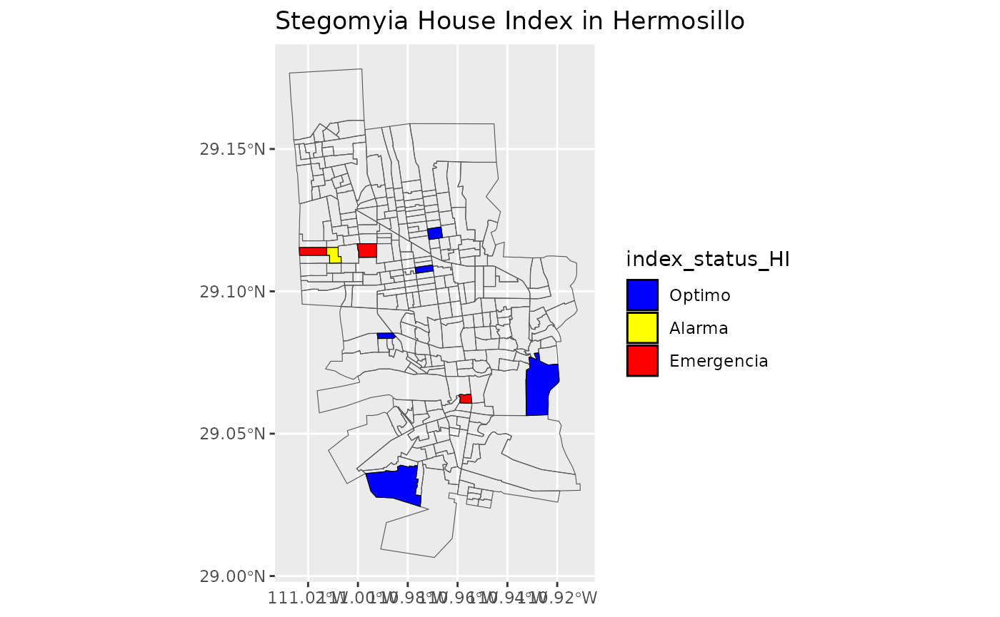
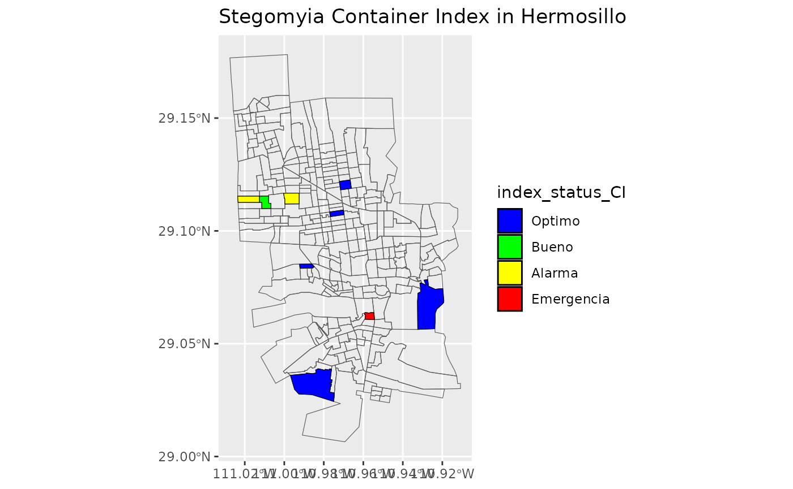
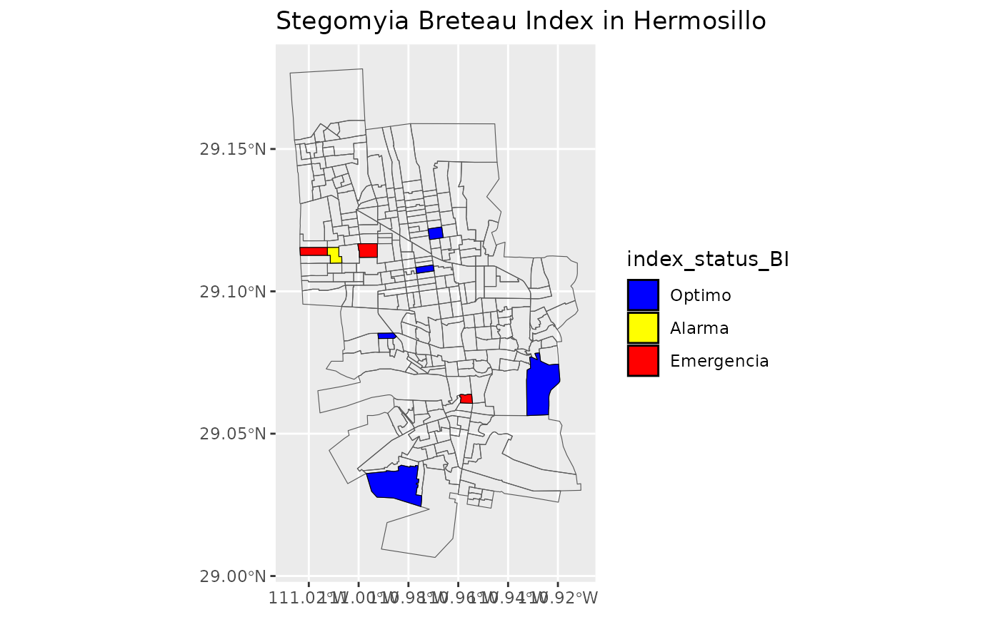

Create maps Stegomyia Indices with help of ggplot
Create_maps_stegomyia_indices_with_help_of_ggplot.RmdMake to maps Stegomyia Indices
The origin of data
The “Programa Estatal de Vigilancia Entomología y Control Integral de Enfermedades Trasmitidas por Vector” carries out various activities for disease prevention, which are guided by surveillance activities that provide entomological risk indices, which is why a Package rStegomyia will be made to calculate the indices of entomological risk in an automatic and timely manner for decision making.
All activities are captured daily on a platform, where it is possible to download the data for reporting and analysis. In the case of Surveillance by Ovitrampa (VO), the platform calculates the risk indices but for the Entomological Study (EE) activity it calculates them per block worked, these indices are required per risk location on a weekly or daily basis.
It is necessary to be able to calculate epidemiological week (SE) risk indices by type of study, risk locality and by epidemiological week in an automated manner.
The EE activity evaluates a sample before (Encuesta) and after (Verificacion) of the comprehensive control activities to determine the entomological risk that exists in a large area to be worked on (Sectors or Locality) and if it requires reinforcing control and prevention actions.
library(rStegomyia)
#> Loading required package: tidyverse
#> ── Attaching core tidyverse packages ──────────────────────── tidyverse 2.0.0 ──
#> ✔ dplyr 1.1.4 ✔ readr 2.1.5
#> ✔ forcats 1.0.0 ✔ stringr 1.5.1
#> ✔ ggplot2 3.5.1 ✔ tibble 3.2.1
#> ✔ lubridate 1.9.4 ✔ tidyr 1.3.1
#> ✔ purrr 1.0.2
#> ── Conflicts ────────────────────────────────────────── tidyverse_conflicts() ──
#> ✖ dplyr::filter() masks stats::filter()
#> ✖ dplyr::lag() masks stats::lag()
#> ℹ Use the conflicted package (<http://conflicted.r-lib.org/>) to force all conflicts to become errors
#> Loading required package: ggmap
#>
#> ℹ Google's Terms of Service: <https://mapsplatform.google.com>
#> Stadia Maps' Terms of Service: <https://stadiamaps.com/terms-of-service/>
#> OpenStreetMap's Tile Usage Policy: <https://operations.osmfoundation.org/policies/tiles/>
#> ℹ Please cite ggmap if you use it! Use `citation("ggmap")` for details.
#> Loading required package: gganimate
#>
#> Loading required package: gifski
#>
#> Loading required package: transformr
#>
#> Loading required package: htmltools
#>
#> Loading required package: htmlwidgets
#>
#> Loading required package: leaflet
#>
#> Loading required package: leaflet.extras
#>
#> Loading required package: raster
#>
#> Loading required package: sp
#>
#>
#> Attaching package: 'raster'
#>
#>
#> The following object is masked from 'package:dplyr':
#>
#> select
#>
#>
#> Loading required package: sf
#>
#> Linking to GEOS 3.12.1, GDAL 3.8.4, PROJ 9.4.0; sf_use_s2() is TRUE
#>
#>
#> Attaching package: 'sf'
#>
#>
#> The following object is masked from 'package:transformr':
#>
#> st_normalizeLoad raw data
Download the file .txt of Entomology Study from plataform “Vigilancia Entomológica y Control Integral del Vector”. Select the variables for your analysis and load the data of the Entomology Study of file .txt to make dataframe. If the variables are not specified, the variables that are going to be selected by default are: “Tipo de Estudio”, “Jurisdiccion”, “Localidad”, “Sector”, “Fecha de Inicio”, “Semana Epidemiologica”, “Casas Revisadas”, “Casas Positivas”, “Total de Recipientes con Agua”, “Total de Recipientes Positivos”.
path_raw_data <- system.file("extdata",
"estudio_entomologico1.txt",
package = "rStegomyia"
)
df_lrd <- load_raw_data(path_raw_data)
#> Rows: 42 Columns: 121
#> ── Column specification ────────────────────────────────────────────────────────
#> Delimiter: "\t"
#> chr (12): Tipo de Estudio, Entidad, Jurisdiccion, Municipio, Localidad, Man...
#> dbl (109): clave, Sector, Altitud (msnm), No. de Habitantes, Semana Epidemio...
#>
#> ℹ Use `spec()` to retrieve the full column specification for this data.
#> ℹ Specify the column types or set `show_col_types = FALSE` to quiet this message.
#> Rows: 42 Columns: 10
#> ── Column specification ────────────────────────────────────────────────────────
#> Delimiter: "\t"
#> chr (4): Tipo de Estudio, Jurisdiccion, Localidad, Fecha de Inicio
#> dbl (6): Sector, Semana Epidemiologica, Casas Revisadas, Casas Positivas, To...
#>
#> ℹ Use `spec()` to retrieve the full column specification for this data.
#> ℹ Specify the column types or set `show_col_types = FALSE` to quiet this message.
head(df_lrd)
#> Tipo_de_Estudio Clave_Jurisdiccion Jurisdiccion Clave_Localidad Localidad
#> 1 Verificacion 2601 Hermosillo 0001 HERMOSILLO
#> 2 Encuesta 2601 Hermosillo 0001 HERMOSILLO
#> 3 Encuesta 2601 Hermosillo 0001 HERMOSILLO
#> 4 Verificacion 2601 Hermosillo 0001 HERMOSILLO
#> 5 Encuesta 2601 Hermosillo 0001 HERMOSILLO
#> 6 Encuesta 2601 Hermosillo 0001 HERMOSILLO
#> Sector Fecha_de_Inicio Semana_Epidemiologica Casas_Revisadas Casas_Positivas
#> 1 569 07/01/2021 1 123 0
#> 2 569 04/01/2021 1 123 24
#> 3 401 07/01/2021 1 69 6
#> 4 401 07/01/2021 1 66 3
#> 5 400 07/01/2021 1 126 9
#> 6 403 07/01/2021 1 153 9
#> Total_de_Recipientes_con_Agua Total_de_Recipientes_Positivos
#> 1 375 0
#> 2 1176 45
#> 3 141 6
#> 4 156 3
#> 5 399 9
#> 6 414 9Clean raw data
Next, clean and give format to the dataframe´s variables of the Entomology Study
path_of_example = c(system.file("extdata",
"qr.csv",
package = "rStegomyia"
)
)
df_crd <- clean_raw_data(df_lrd,
path_out = path_of_example
)
#> Warning: The following named parsers don't match the column names:
#> Clave_Municipio, Municipio
head(df_crd)
#> Tipo_de_Estudio Clave_Jurisdiccion Jurisdiccion Clave_Localidad Localidad
#> 1 Verificacion 2601 Hermosillo 0001 HERMOSILLO
#> 2 Encuesta 2601 Hermosillo 0001 HERMOSILLO
#> 3 Encuesta 2601 Hermosillo 0001 HERMOSILLO
#> 4 Verificacion 2601 Hermosillo 0001 HERMOSILLO
#> 5 Encuesta 2601 Hermosillo 0001 HERMOSILLO
#> 6 Encuesta 2601 Hermosillo 0001 HERMOSILLO
#> Sector Fecha_de_Inicio Semana_Epidemiologica Casas_Revisadas Casas_Positivas
#> 1 569 2021-01-07 1 123 0
#> 2 569 2021-01-04 1 123 24
#> 3 401 2021-01-07 1 69 6
#> 4 401 2021-01-07 1 66 3
#> 5 400 2021-01-07 1 126 9
#> 6 403 2021-01-07 1 153 9
#> Total_de_Recipientes_con_Agua Total_de_Recipientes_Positivos
#> 1 375 0
#> 2 1176 45
#> 3 141 6
#> 4 156 3
#> 5 399 9
#> 6 414 9Calcul Stegomyia indices by type of study and geographic area
Select study type and sectors to analize the dataframe of the Entomology Study. If the study type is not specified, “Verificacion” is going to be selected by default. The function will calculate Stegomyia Indices and Index Status by Sector. Use that data to make a new dataframe
path_of_example2 = c(system.file("extdata",
"statusindicesector.csv",
package = "rStegomyia"
)
)
sectors <-c(df_crd$Sector)
df_sitsgis <- get_stegomyia_indices_by_type_of_study_and_geo_is(df_crd,
var= c(sectors),
path_out = path_of_example2
)
#> Warning in get_stegomyia_indices_by_type_of_study_and_geo_is(df_crd, var =
#> c(sectors), : Casa_Revisada with 0
df_sitsgis
#> Sector HI CI BI index_status_HI index_status_CI
#> 1 390 0.000000 0.000000 0.000000 Optimo Optimo
#> 2 400 9.803922 4.166667 9.803922 Emergencia Alarma
#> 3 401 4.545455 1.923077 4.545455 Alarma Bueno
#> 4 403 7.246377 3.157895 8.695652 Emergencia Alarma
#> 5 444 0.000000 0.000000 0.000000 Optimo Optimo
#> 6 500 0.000000 0.000000 0.000000 Optimo Optimo
#> 7 513 0.000000 0.000000 0.000000 Optimo Optimo
#> 8 540 12.000000 5.357143 12.000000 Emergencia Emergencia
#> 9 569 0.000000 0.000000 0.000000 Optimo Optimo
#> 10 824 0.000000 0.000000 0.000000 Optimo Optimo
#> 11 835 0.000000 0.000000 0.000000 Optimo Optimo
#> 12 848 4.545455 1.923077 4.545455 Alarma Bueno
#> 13 857 0.000000 0.000000 0.000000 Optimo Optimo
#> 14 858 12.000000 5.357143 12.000000 Emergencia Emergencia
#> 15 862 9.803922 4.166667 9.803922 Emergencia Alarma
#> 16 869 7.246377 3.157895 8.695652 Emergencia Alarma
#> 17 921 0.000000 0.000000 0.000000 Optimo Optimo
#> 18 927 0.000000 0.000000 0.000000 Optimo Optimo
#> 19 928 0.000000 0.000000 0.000000 Optimo Optimo
#> 20 1248 0.000000 0.000000 0.000000 Optimo Optimo
#> 21 1305 0.000000 0.000000 0.000000 Optimo Optimo
#> index_status_BI
#> 1 Optimo
#> 2 Emergencia
#> 3 Alarma
#> 4 Emergencia
#> 5 Optimo
#> 6 Optimo
#> 7 Optimo
#> 8 Emergencia
#> 9 Optimo
#> 10 Optimo
#> 11 Optimo
#> 12 Alarma
#> 13 Optimo
#> 14 Emergencia
#> 15 Emergencia
#> 16 Emergencia
#> 17 Optimo
#> 18 Optimo
#> 19 Optimo
#> 20 Optimo
#> 21 OptimoMake the maps with status of Stegomyia indices
Use the new dataframe created to make maps for Stegomia Index Status with the sectors of Locality “Hermosillo”
list_of_maps <-get_maps_stegomyia_indices(df_sitsgis)
#> Warning in CPL_transform(x, crs, aoi, pipeline, reverse, desired_accuracy, :
#> GDAL Error 1: PROJ: defmodel: Cannot open nz_linz_nzgd2000-20180701.json
#> Warning in CPL_transform(x, crs, aoi, pipeline, reverse, desired_accuracy, :
#> GDAL Error 1: PROJ: pipeline: Pipeline: Bad step definition: proj=defmodel
#> (File not found or invalid)
#> Warning in CPL_transform(x, crs, aoi, pipeline, reverse, desired_accuracy, :
#> GDAL Error 1: PROJ: defmodel: Cannot open nz_linz_nzgd2000-20180701.json
#> Warning in CPL_transform(x, crs, aoi, pipeline, reverse, desired_accuracy, :
#> GDAL Error 1: PROJ: pipeline: Pipeline: Bad step definition: proj=defmodel
#> (File not found or invalid)
#> Warning in CPL_transform(x, crs, aoi, pipeline, reverse, desired_accuracy, :
#> GDAL Error 1: PROJ: defmodel: Cannot open nz_linz_nzgd2000-20180701.json
#> Warning in CPL_transform(x, crs, aoi, pipeline, reverse, desired_accuracy, :
#> GDAL Error 1: PROJ: pipeline: Pipeline: Bad step definition: inv (File not
#> found or invalid)
#> Warning in CPL_transform(x, crs, aoi, pipeline, reverse, desired_accuracy, :
#> GDAL Error 1: PROJ: defmodel: Cannot open nz_linz_nzgd2000-20180701.json
#> Warning in CPL_transform(x, crs, aoi, pipeline, reverse, desired_accuracy, :
#> GDAL Error 1: PROJ: pipeline: Pipeline: Bad step definition: inv (File not
#> found or invalid)
list_of_maps
#> [[1]]
#>
#> [[2]]
#>
#> [[3]]